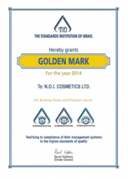
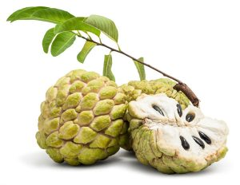
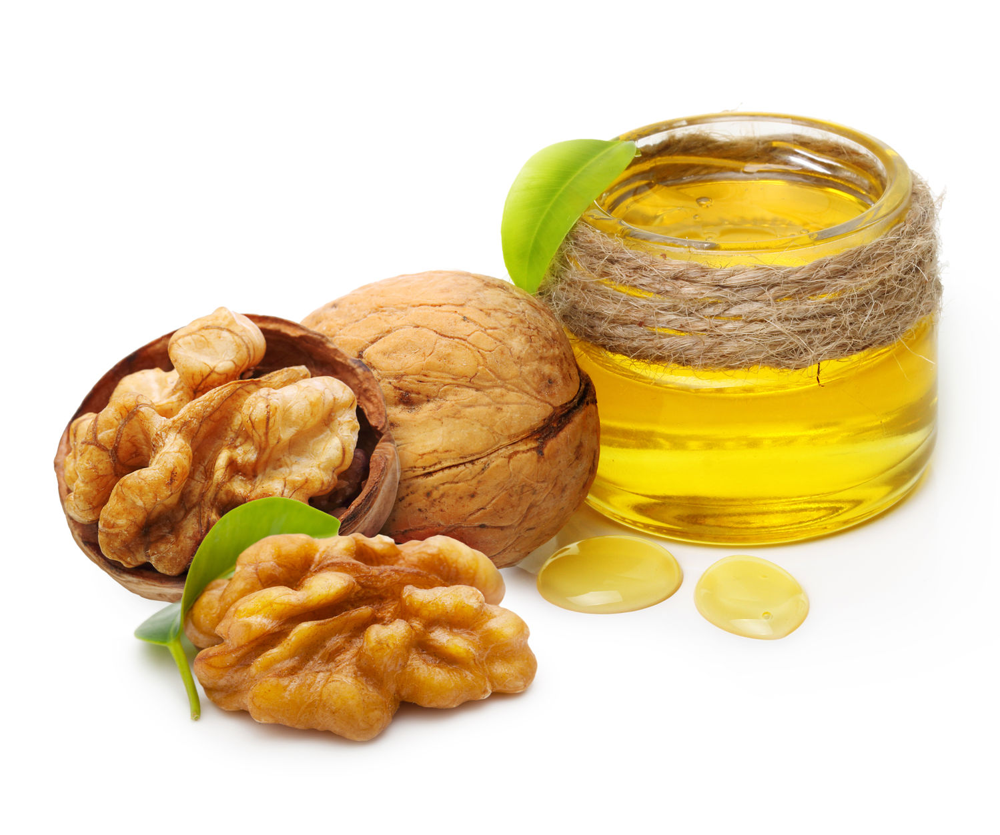
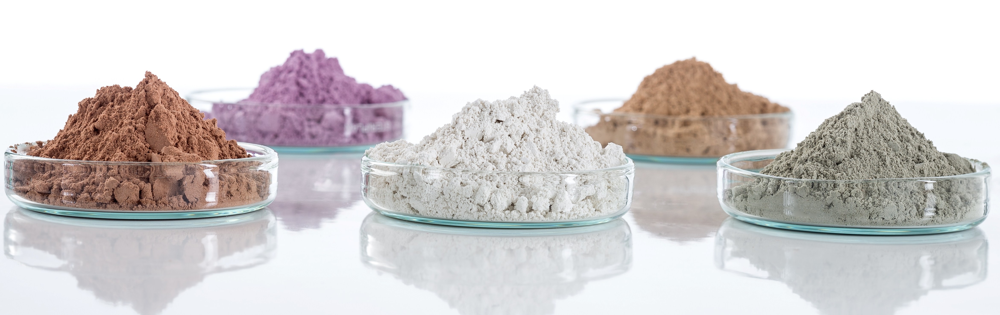

ООО «Бьюти Минералс» — оптовая компания, реализующая одноименный бренд натуральной косметики Мёртвого моря Beauty Minerals.
Контрактное производство в Израиле, позволило нам добиться высочайшего качества и умеренных цен на нашу продукцию!
Группа наших компаний, на протяжении уже более 15 лет занимается оптовыми поставками косметики Мёртвого моря на рынок Татарстана и России.
В середине 2016 года нами было принято решение о разработки собственной линейки косметики по уходу за лицом, телом и волосами Beauty Minerals, где впервые использованы уникальные свойства фрукта Аннона (сахарное яблоко) в сочетание с грязями и солями Мертвого моря. Благодаря этому нам удалось добиться удивительного эффекта замедления старения кожи и восстановлению здоровья волос.

Производство нашей косметики протекает на заводе N.O.I. cosmetics в Израиле и проходит полный курс проверки качества и соответствия международным стандартам в исследовательских лабораториях завода.
Нами были воплощены новейшие формулы, в составе которых исключительно натуральные ингредиенты. В основе косметики Beauty Minerals лежат новейшие способы производства, соответствующие международным стандартам качества, что подтверждается сертификатами.
Вся продукция Beauty Minerals не содержит спиртов и парабенов и произведена по уникальной рецептуре из экологически чистого растительного сырья.
Продукция прошла аккредитацию в международных системах обеспечения качества GMP и ISO.
Наша гордость – знак Национального Института Стандартов Израиля «Golden Mark» (Золотая Марка), подтверждающий стабильное качество, экологическую чистоту и высокотехнологичность производства.
Работая с нами, вы приобретаете надежного и единственного в России партнёра по поставке натуральной косметики Мёртвого моря бренда «Beauty Minerals».
Добро пожаловать в мир натуральной косметики Beauty Minerals!
О продукции
Натуральная косметика Мёртвого моря Beauty Minerals
В современном мире, где выбор косметических средств по уходу за кожей и волосами огромен, особняком стоит косметика, произведённая на основе грязи и соли Мертвого моря, а также специальных экстрактов тропических растений.
Желание продлить красоту, здоровье и сияние вашей кожи и волос, побудило нас на создание уникальной по своим свойствам косметической линии.
Представляем Вашему вниманию линейку косметических средств Beauty Minerals, где впервые использованы уникальные свойства фрукта Аннона (сахарное яблоко) в сочетание с грязями и солями Мертвого моря. Благодаря этому нам удалось добиться удивительного эффекта замедления старения кожи и восстановлению здоровья волос.

Уникальные свойства Мертвого Моря известны с глубокой древности. Легенды гласят, что секрет красоты Клеопатры в использовании целебных свойств минералов и грязей Мертвого моря.
Помимо целебной грязи, Мертвое море обладает набором полезных веществ в структуре воды. Процентное содержание солей в водах Мёртвого моря почти в 10 раз превосходит их содержание в Мировом океане. Воды Мёртвого моря содержат практически все элементы таблицы Менделеева. Особый оздоровительный эффект производят такие элементы как:
— магний – природный антидепрессант, обладающий противоаллергенными свойствами, поднимает общий тонус клеток кожи;
— бром – обладает антибактерицидным и успокаивающим свойствами;

— кальций – укрепляет и способствует регенерации клеток организма, стабилизирует метаболические процессы в организме и обладает антибактериальными свойствами;
— натрий – это энергия и контроль водно-солевого баланса в организме;
— калий – способствует быстрому распределению питательных веществ в клетках организма, снабжая их всем необходимым для полноценной работы. Содержание калия в водах Мёртвого моря в 20 раз выше, чем в обычной морской воде.

Следующий компонент косметики Beauty Minerals – Аннона.
Аннона, или Сахарное яблоко – кладезь витаминов и микроэлементов, необходимых для сохранения молодости, эластичности, блеска и здоровья кожи и волос. Входящий в состав Анноны Витамин С обеспечит длительную защиту вашей кожи от появления морщин, восстановит упругость и эластичность, нейтрализует свободные радикалы, укрепит иммунную систему кожи.
Калий сбалансирует водно-солевой баланс кожи и увлажнит её, обеспечит регенерацию и омоложение клеток. Также калий способствует укреплению волос и борется их выпадением.
Магний играет важную роль в выработке коллагенов и укреплении соединительных тканей и борется с появлением секущихся концов.
Биоактивные компоненты, используемые при производстве косметики Beauty Minerals, получены с применением технологии низкотемпературной вакуумной экстракции, а масла – по технологии холодного отжима. В совокупности, применение этих двух технологий, гарантирует сохранение всех целебных и омолаживающих свойств, входящих в состав нашей косметики масел и экстрактов.
 Вся продукция Beauty Minerals не содержит спиртов и парабенов и произведена по уникальной рецептуре из экологически чистого растительного сырья.
Вся продукция Beauty Minerals не содержит спиртов и парабенов и произведена по уникальной рецептуре из экологически чистого растительного сырья.
Продукция прошла аккредитацию в международных системах обеспечения качества GMP и ISO.
Наша гордость – знак Национального Института Стандартов Израиля «Golden Mark» (Золотая Марка), подтверждающий стабильное качество, экологическую чистоту и высокотехнологичность производства.
Декларации соответствия

Вся продукция Beauty Minerals соответствует требованиям ТР ТС 009/2011 «О безопасности парфюмерно-косметической продукции», утвержденным Решением Комиссии Таможенного союза от 23 сентября 2011 г. №799, что подтверждается соответствующими Декларациями о соответствии: